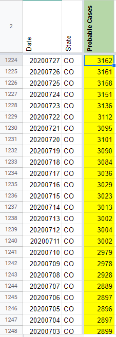
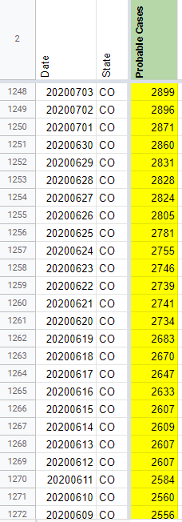
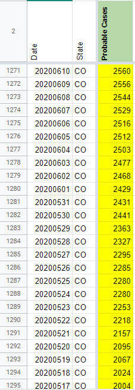
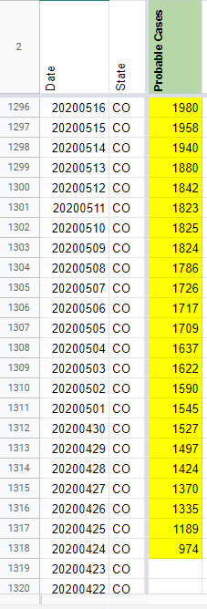
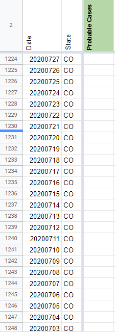
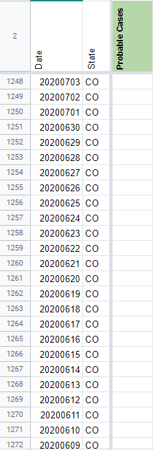
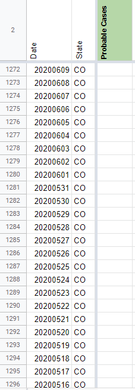

[CO] Probable backfill 4/24 - 7/27
Issue number 812
the-daniel-lin opened this issue on September 4, 2020 at 10:06 am
Labels Data quality Historical Data Backfill
State or US: Colorado
Describe the problem On 7/28, CTP introduced an explicit probables column. Backfilling through 4/24 (when CO first separated out confirmed cases on their dashboard) by subtracting confirmed cases from total cases. Fixing issues with confirmed/probables in https://github.com/COVID19Tracking/issues/issues/848
Link to data source We have screenshots of probables through 4/24 to reference. We also have a state-provided archive with probable values: https://drive.google.com/drive/folders/1bBAC7H-pdEDgPxRuU_eR36ghzc0HWNf1
4/24 screenshot: https://covid-tracking-project-data.s3.us-east-1.amazonaws.com/state_screenshots/CO/CO-20200424-000533.png
{kind=link}
Comments
AFTER:    
Backfilled values: 3162 3161 3158 3151 3136 3112 3095 3101 3090 3084 3036 3029 3023 3013 3002 3004 3002 2979 2978 2928 2889 2897 2896 2897 2899 2896 2871 2860 2831 2828 2824 2805 2781 2755 2746 2739 2741 2734 2683 2670 2647 2633 2607 2609 2607 2607 2584 2560 2556 2544 2529 2516 2512 2503 2477 2468 2429 2431 2441 2363 2327 2295 2285 2280 2280 2253 2218 2157 2095 2067 2024 2004 1980 1958 1940 1880 1842 1823 1825 1824 1786 1726 1717 1709 1637 1622 1590 1545 1527 1497 1424 1370 1335 1189 974
BEFORE:   